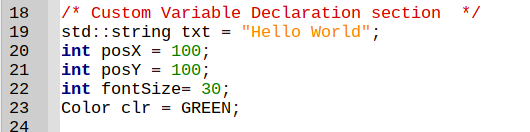
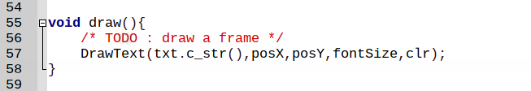
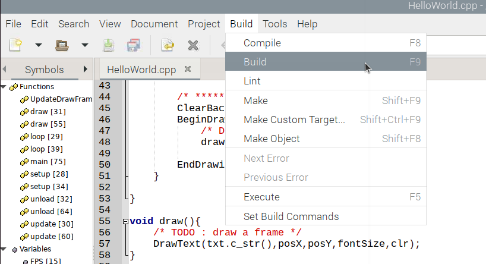

เริ่มต้นด้วย HelloWorld
รู้จักกับ template.cpp
template.cpp ถูกสร้างเพื่อใช้เป็นแนวทางในการเขียนโปรแกรมกับ raylib โครงสร้างหลักมี 3 ส่วนคือ header files, variable declaration และ functions
graph TD;
template.cpp --> header_files;
template.cpp --> variable_declarion;
template.cpp --> function_declaration;
ส่วนของ header files จะถูกประกาศไว้ 2 files คือ raylib.h และ raymath.h เป็น header ที่ใช้สำหรับ raylib ผู้ใช้สามารถเพิ่ม header files ต่างๆได้เอง
graph TD;
header_files --> raylib.h;
header_files --> raymath.h;
ตัวแปร (variables) ที่ถูกประกาศไว้เบื้องต้นคือ
- SCR_WIDTH แทนค่าความกว้างของ screen ที่ใช้แสดงผล
- SCR_HEIGHT แทนค่าความสูงของ screen ที่ใช้แสดงผล
- cx,cy แทนตำแหน่ง (coordinates) จุดตรงกลางของ screen ที่ใช้แสดงผล
- FPS แทนอัตราเร็วของการวาด (frame per second) ตั้งไว้ที่ 60 fps
- title แทนข้อความแสดงบน title bar
ผู้ใช้สามารถเพิ่มหรือปรับแต่งค่าตัวแปรให้เหมาะสมกับการใช้งานได้
graph TD;
variable_declaraion --> SCR_WIDTH
variable_declaraion --> SCR_HEIGHT
variable_declaraion --> cy
variable_declaraion --> cx
variable_declaraion --> FPS
variable_declaraion --> titile
การทำงานของโปรแกรมถูกแบ่งออกเป็น 5 functions ดังนี้
- setup ใช้ในการกำหนดค่าเริ่มต้นให้กับตัวแปรที่ประกาศไว้ในส่วนของ variable declaration
- update ใช้ในการปรับแต่งค่าตัวแปรในระหว่างที่โปรแกรมทำงาน
- draw ใช้ในการวาดบนหน้าจอ เป็นส่วนที่ใช้ชุดคำสั่งของ raylib
- loop คือ main loop ของโปรแกรม โดยแต่ละรอบการทำงานจะไปเรียกใช้ update และ draw
- unload ใช้ล้างค่าของตัวแปรก่อนที่จะหยุดโปรแกรม
graph TD;
functions --> setup;
functions --> update;
functions --> draw;
functions --> loop;
functions --> unload;
Flow chart แสดงขั้นตอนการทำงานของโปรแกรมแสดงตามภาพข้างล่างนี้
flowchart TD;
start --> id2(variable declartion)-->id3(function declaration)-->id4(initialize variables)
id4(initialize variables)-->id5(update variables)-->id6(draw something)-->id7{exit loop}-- NO -->id5(update variables)
id7{exit loop}-- YES -->id8(unload variables)-->stop
การสร้าง Hello World Window
เริ่มต้นทำความคุ้นเคยกับ raylib ด้วยการสร้าง application window ที่มี title ว่า "Hello World".
-
เปิด template.cpp ด้วย Geany แล้วบันทึกลงในชื่อใหม่เป็น "HelloWorld.cpp"
-
เพิ่มเติมชุดคำสั่งลงใน HelloWold.cpp ดังนี้
- เพิ่ม string header file ในบรรทัดที่ 3

- เพิ่ม variables ในบรรทัดที่ 19-23
 - เพิ่มคำสั่ง DrawText(...) ในบรรทัดที่ 57
 -
บันทึกแล้วทำการ build ด้วยเมนูบาร์ Build หรือ กดแป้น F9
 -
รอจนการ build สำเร็จ จะพบข้อความบน Message Window

-
Execute โปรแกรมที่ได้ด้วยเมนูบาร์ Execute หรือกดแป้น F5

-
การแสดงผลของโปรแกรมแรก

-
กดแป้น Esc เพื่อออกจากโปรแกรม และแป้น Enter อีกครั้งเพื่อปิดหน้า virtual terminal และกลับสู่ Geany